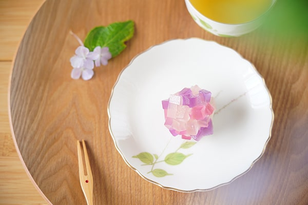
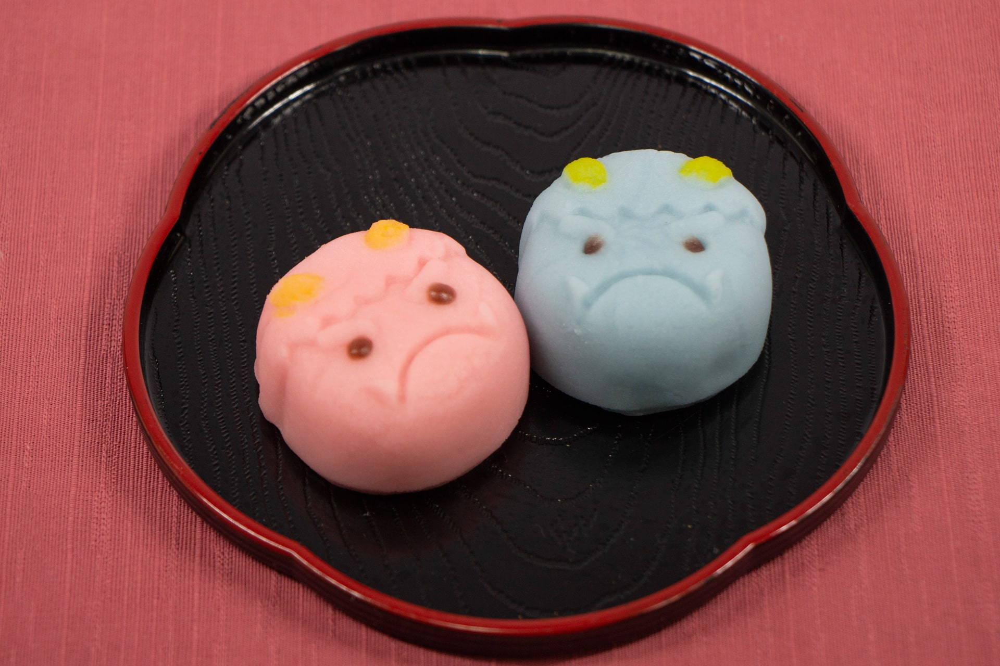

紡ぐ和

紡ぐ和
- Tsumugu Nagomi -
営業時間
10：00～21：00
〒130-0026
東京都墨田区両国３丁目５番
03-3345-6789
和服と和傘
'和服'は、文字通り「和」の「服」、すなわち日本の衣服という意味です。2018年の経済産業省による調査で、20歳代女性の73％が「着物を着てみたい」と回答するなど潜在的需要はあるものの手が出しにくいのが現状です。コンサルタントの分析によると、女性用振袖については「レンタル5割、購入3割、親から受け継ぐ娘が2割」程度であると言われています。時代も移り変わり令和となった現在、もう一度今の世代に是非触れていただきたいです。
和紙と竹に囲まれたその小さな空間の中には、和紙だからこその光の拡散と日本の四季を感じられる豊かな世界が広がります。和傘・番傘は、竹を材料にし作製した骨組みに、和紙を張り防水を施した傘のことをいいます。日本では雨よけという意味合いだけでなく、「魔除け」「日よけ」から仕様されてきた歴史があります。今回和服とともにレンタルをはじめました。ぜひ、あなた好みの傘をさしてみてください。気に入った傘はそのまま特別価格でお持ち帰りいただけます。
'和服'は、文字通り「和」の「服」、すなわち日本の衣服という意味です。2018年の経済産業省による調査で、20歳代女性の73％が「着物を着てみたい」と回答するなど潜在的需要はあるものの手が出しにくいのが現状です。コンサルタントの分析によると、女性用振袖については「レンタル5割、購入3割、親から受け継ぐ娘が2割」と言われています。時代も移り変わり令和となった現在、もう一度今の世代に是非触れていただきたいです。
和紙と竹に囲まれたその小さな空間の中には、和紙だからこその光の拡散と日本の四季を感じられる豊かな世界が広がります。和傘・番傘は、竹を材料にし作製した骨組みに、和紙を張り防水を施した傘のことをいいます。日本では雨よけという意味合いだけでなく、「魔除け」「日よけ」から仕様されてきた歴史があります。今回和服とともにレンタルをはじめました。ぜひ、あなた好みの傘をさしてみてください。気に入った傘はそのまま特別価格でお持ち帰りいただけます。
キャンペーン
-
和傘ライトアップ夏季 2024
風鈴の音色と和傘のライトアップ
ひんやり葛切りやふわふわかき氷も。
自分好みの組合せで浴衣を作ろう。
そのまま割引価格でご購入いただけます。
7/20 ~ 8/31 まで -
七夕Night 2024
織姫と彦星をイメージした浴衣が登場。
星空をイメージしたライトアップも。
茶屋では新作七夕スイーツもできました。
7/5 ~ 7/11 まで
7日間の開催です。 -

2024 雨の日こそ和傘を。
和傘で感じる雨音とほんのり香る油。
あじさいも満開の季節になりました。
茶屋では新作、和菓子職人自信作
紫陽花まんじゅうとわらびもちが登場。
6/1~6/31 まで -
あつまれ！子ども日！
見つけたこいのぼり数だけ値引きチャレンジ
最大半額でレンタルできるチャンス！
疲れたらこいのぼりスイーツで休憩も◎
4/27 ~ 5/5まで -
春の和傘ライトアップ2024
春色和傘がたくさん入荷しました。
一面ピンクの春色ライトアップ
ももいろ和菓子も新登場
3/1 ~ 4/29 まで -

豆まきイベント2024
豆まき大会を開催いたします
〇〇風着物で鬼退治！お子様用も。
節分まんじゅうも新登場！
2/1 ~ 2/3 の三日間
和傘ライトアップ夏季2024
風鈴の音色と和傘のライトアップ。
ひんやり葛切りやふわふわかき氷も。
7/20 ~ 8/31
2024 雨の日こそ和傘を。
和傘で感じる雨音とほんのり香る油。
あじさいも満開の季節になりました。
茶屋の新作、自信作のあじさいモチーフ
6/1~7/1
あつまれ！こどもの日
見つけたこいのぼりの数だけ値引きあり
最大半額でレンタルできるチャンス！
こいのぼりスイーツで休憩も◎
5/1~5/5
春の和傘ライトアップ2021
春色和傘がたくさん入荷しました。
一面ピンクの春色ライトアップ。
ももいろ和菓子も新登場
3/1 ~ 4/29
豆まきイベント2024
豆まき大会を開催いたします
〇〇風着物で鬼退治！お子様用も。
節分まんじゅうも新登場
2/1 ~2/3 の三日間
レンタルコース
-
No.1
優雅な半日コース¥3,500
午後から、ゆったり和服さんぽ。夜のライトアップが人気です。
-
No.2
二着選べる 満喫コース¥6,080
一着だけなんて決められない、わがまま娘に人気のコース。
-
No.3
カップル限定コース¥8,080 ※ お二人分のレンタル料金を含む
ご希望のスポットでお写真をお撮りし、お帰りの際に写真をプレゼント。
-
No.4
屋内 屋外 撮影貸し出し1Days¥15,000~
決められた場所での撮影コースから苑内全ての貸し切りまで
ご相談承っております。詳しくは当苑までご連絡ください。
茶屋 - お品書き -
わらびもち
きなこと抹茶の2色わらび餅
黒糖葛切り
黒糖のさっぱりした甘味が◎
白玉抹茶葛切り
白玉抹茶夏の葛切りver.
ひんやり水まんじゅう
お饅頭たちが水中で待機。
チョコミント菓子
スッキリミントチョコ
あんみつパフェ
人気No1
どら焼き
あんこぎっしり
特選カステラ
シャリシャリザラメが◎
ずんだとお抹茶Set
仙台ずんだを贅沢使用
伝統のきんつば
一度ご賞味あれ。
似顔絵まんじゅう
自分好みのまんじゅうに。
桜抹茶ムース
塩漬け桜と抹茶ムース
黒豆羊羹
大粒豆の存在感
イチゴ3色3兄弟
シェアOK
いちご大福
年中大人気
抹茶生クリーム
自家製濃厚抹茶
抹茶おしるこ
別名：ホット抹茶ぱふぇ
豆大福
大きな丹波産黒豆を使用
ピーナッツもなか
見た目だけじゃない旨さ
カラフルまんじゅう
ホロホロほどける色鮮やか饅頭
ミニおはぎ
黒ゴマ・きなこ・粒あん
体験コーナー
-
焼きたてほくほく団子 ¥600～
自分の好きなタイミングで、好きな味をつけて食べられるセルフ焼き団子。当店では七輪での炭火焼です。焼きたてホクホクのお団子でほっぺもとろとろ！
-
作って食べる 和菓子作り ¥1,500～
職人の指導のもと、だれでも楽しく和菓子つくりができます。好きな色や形に自由にするもよし。お題に挑戦するもよし。食べるのがもったいなく感じてしまう方にはお持ち帰りも！
-
折り紙 (千代紙) 体験 ¥700～
折り紙は用途によって2つに分かれ、遊戯は遊び、儀礼は儀式や贈り物 折り紙を数学の幾何学的な側面からとらえた研究もありお子様の発育としてまた大人の方も儀礼の折り方を気軽に体験していただけます。